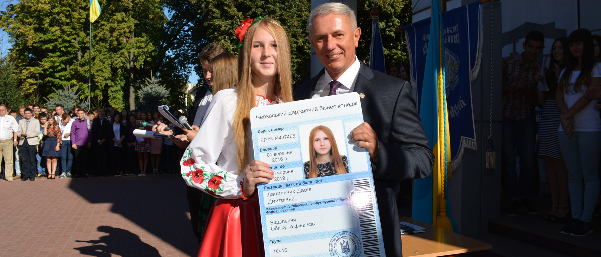
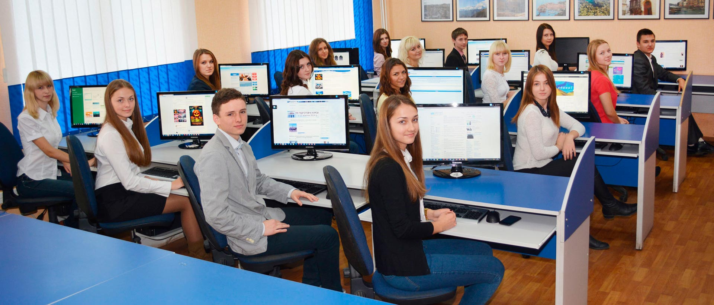

У 1962 році у м.Черкаси розпочалось будівництво Черкаського хімічного комбінату (Сьогодні - ПрАТ "Азот"). Виконавчий комітет Черкаської міської Ради, керуючись Постановою Ради Міністрів СРСР, комітет ЧМР виділив земельну ділянку площею 2,04 гектара для будівництва технічного училища, яке б готувало робітничі кадри для майбутнього промислового гіганта України. У 1985 році навчальний заклад вперше атестовано для надання освітніх послуг за рівнем повної загальної середньої освіти. У 2001 році в коледжі запроваджено підготовку бакалаврів. З 2016 року бізнес-коледж є учасником програми Європейского Союзу "Еразмус+" за напрямом "КА 1: академічна мобільність", у рамках якої студенти та викладачі щосеместрово отримують гранти на навчання та викладання і стажування у Вищій школі менеджменту інформаційних систем, м. Рига, Латвія. Вже залучено шістнадцять семестрових грантів для студентів та чотирнадцять для викладачів на загальну суму більше 105 тис. євро. Програма продовжена до 31 липня 2025 року.

